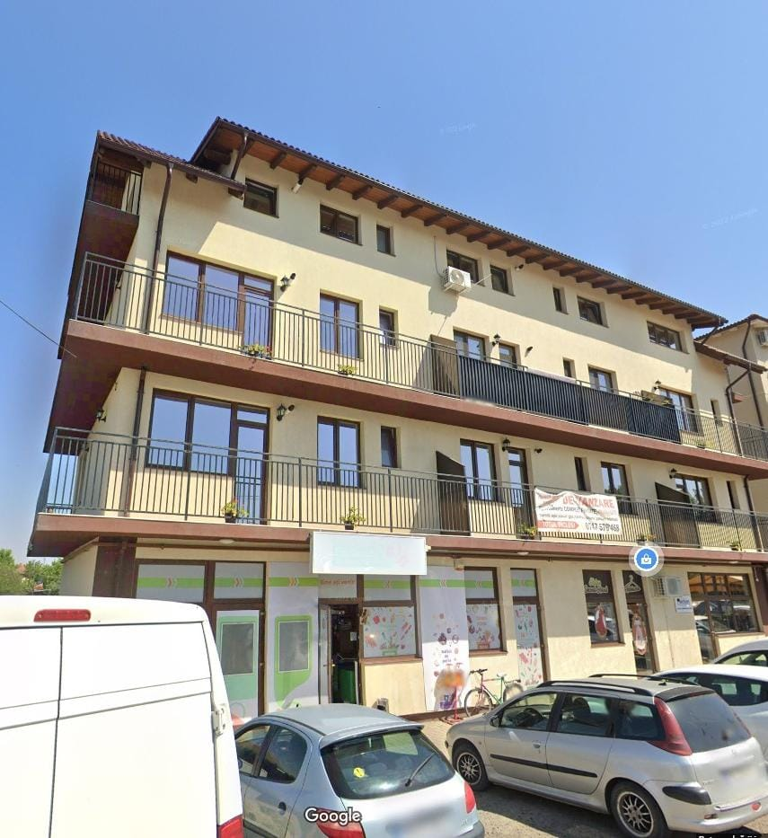
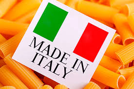
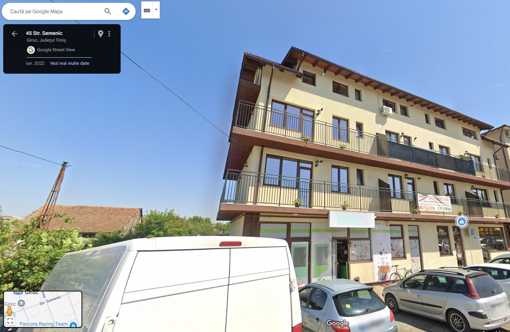

Cine suntem?
Suntem un magazin italian nou deschis, unde aducem autenticitatea și
savoarea Italiei mai aproape de tine. Găsești la noi paste artizanale,
brânzeturi fine, uleiuri de măsline, dulciuri rafinate și multe alte
delicatese alese cu grijă. Fie că vrei să recreezi rețete tradiționale
sau să descoperi noi arome, te așteptăm să descoperi produsele
autentice,aduse chiar din Italia.

Misiunea noastra:
Ne propunem să aducem autenticitatea bucătăriei italiene mai aproape de
tine, oferindu-ți produse de calitate, atent selecționate. Vrem să
transformăm fiecare masă într-o experiență autentică, plină de savoare
și tradiție. Punem accent pe prospețime, gust și respect pentru rețetele
originale, astfel încât fiecare client să se bucure de adevărata esență
a Italiei.

Unde ne puteți găsi?
Ne găsiți pe Strada Semenic 45, Giroc sau în secțiunea "Locație".
Program: Luni - Vineri, 09:00 - 18:00
Telefon:520762 772 652
Email:luca.davide12.l@gmail.com
Pentru orice probleme, folosiți secțiunea "Contact". Vă așteptăm cu drag!